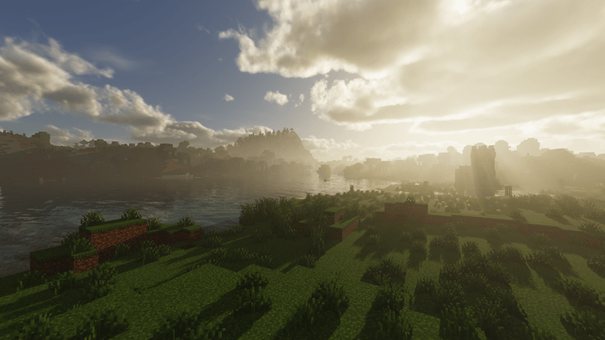
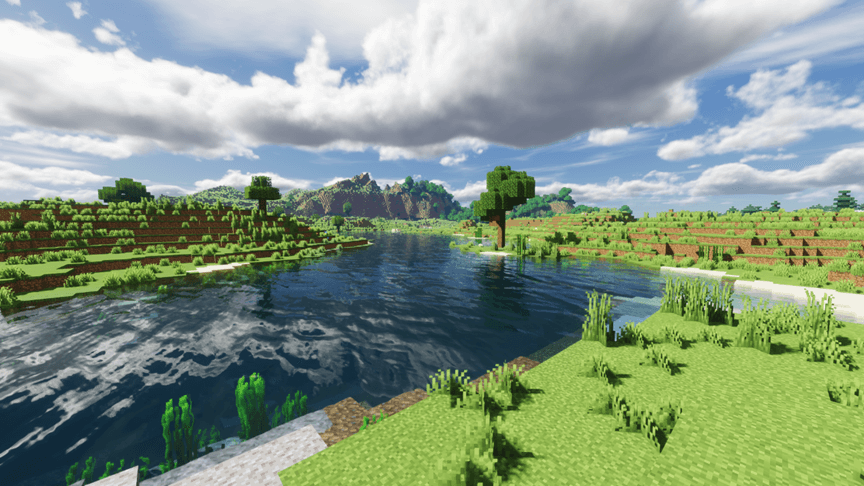
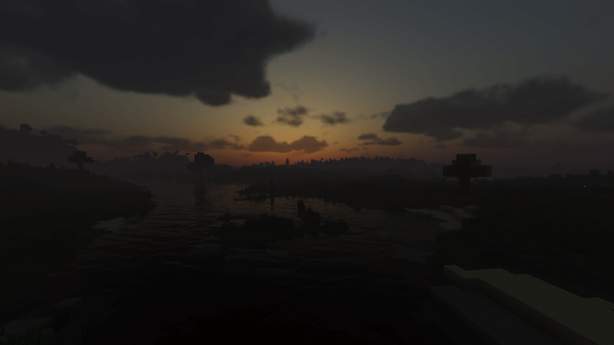
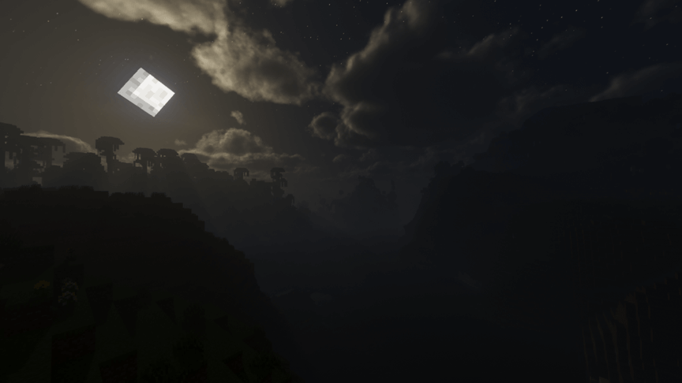
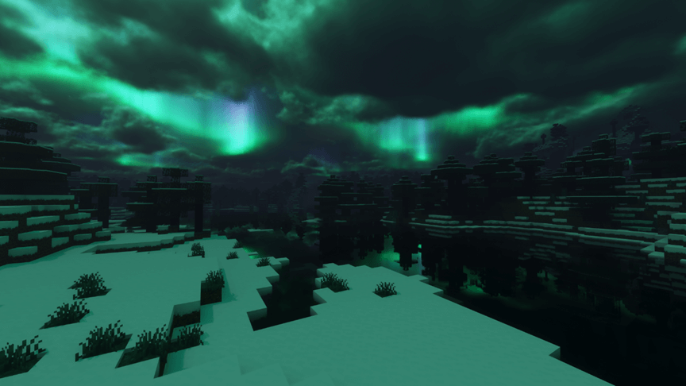
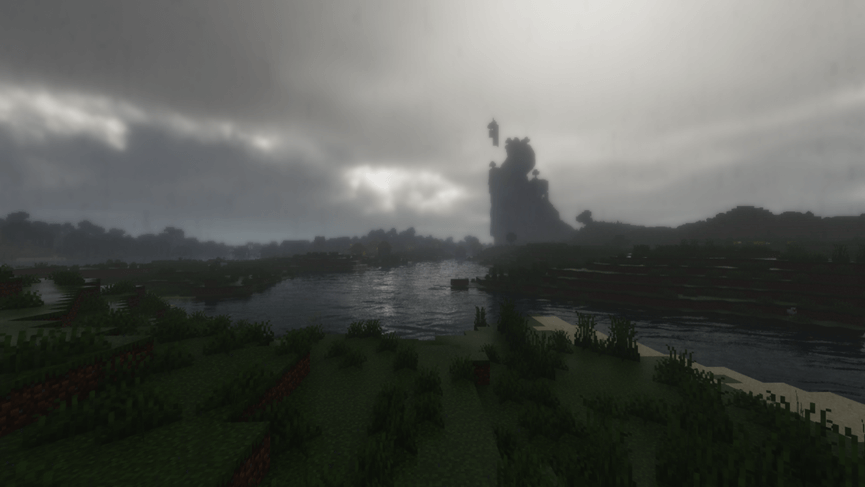

iterationT 2.0.0 使用手册
3.0.0 已发布
目前 iterationT 3.0.0 已正式发布。点击此处前往它的使用手册： 《iterationT 3.0.0 使用手册》
3.0.0 宣传片： 【MC&光影预告】iterationT 3.0.0 前瞻演示——明与寂
iterationT 的由来及版权信息
在使用光影之前，我们需要先了解 iterationT 的由来。相信在 MGC频道 里的很多小伙伴经历过月初的内测版外传事件（在此再次感谢机警的杜豫），命途多舛的 iterationT 内测活动仅一天就被迫暂停。随后发布消息更是传到了外网，我们差点和国外的光影社区 shaderLABS 正面交锋。好在创作者 GeForceLegend 从中斡旋，管理层及时补救，最终消弭了危机。
时至今日，我们总算是苦尽甘来，迎来了 iterationT 的正式发布。由于版权的特殊性，我们需要在开头说清楚关于 iterationT 的版权问题。以下是关于它的起源：
由于 Cody 作者本人的协议限制，其他人在获得授权前，不允许公开发布魔改文件。国内的绝大部分 SEUS 魔改版本均不符合此要求。因此我们也希望大家不要再把光影的发布消息或文件散布到国外社交平台上。
同时，我们也在逐步改进这个问题，下一代的 iterationT RP 将会完全原创，敬请期待。
下面，正式开始讲解更新内容。
光与影
本篇内容会附带自定义讲解，喜欢DIY的小伙伴不要错过哦
带“⚙️”的句段为自定义设置
色调调整
本次更新，色调全面改为写实风格
 日出，万象初开
 正午，阳光明媚
 黄昏，晚霞辉光
 夜晚，月光皎洁
 极地月夜，极光之舞（这一代默认不开启极光，需要手动打开，会在大气板块讲解）
 雨天，弥漫的雾气模糊着远处的景色，光线照亮云层之间的缝隙 ⚙️雨天到晴天的过渡可能时间较长，可以前往：材质 -> 水面与雨雪 进行设置
光照改进
第二代 iterationT 引入了 RSM（Reflective Shadow Maps） 全局光照 有关 RSM 的简要技术原理说明，请见： 着色器 技术科普 - RSM 在这里放几组图来直观感受一下：
⚙️自定义位置：光照 -> 全局光照设置（关闭可提升一部分性能，但部分场景的感知可能较差）
随后是漏光修复，是本代新引入的 相信各位在使用不少光影时一定会被地下漏光这个问题所困扰 尤其是1.18的巨型洞穴系统 （关闭全局光照可以直接解决，但得不偿失，对吧） 所以本次更新引入了漏光修复
⚙️自定义位置：光照 -> 全局光照设置 -> 漏光修复（注：水下无法修复）
曝光问题
使用过 Continuum、Kappa 等一系列光影的小伙伴们肯定会被这个问题所困扰 在亮处周围啥都看不见，在暗处光源瞎眼 然而曝光调节又晦涩难懂 所以，此次加入了一些实用的小功能 主要是亮度权重 可以直接改善有光源处的暗处体验
⚙️自定义位置：快捷选项 -> 亮度权重（建议在嗑夜视时打开此选项，否则光源处仍会较暗）
⚙️详细自定义位置：后处理 -> 曝光（光源优先模式可能会导致画面过暗）
⚙️感觉修改后还是太暗？你可以前往：光照 -> 光照设置 -> 无光基础亮度 ，增大此选项的值，达到直接夜视的效果
阴影改动
首先是一个小细节，屏幕空间衔接阴影 可以解决阴影与方块衔接处接不上的情况 不过也只是个实验性功能，细看的话会发现精度比较低
⚙️自定义位置：光照 -> 阴影设置 -> 屏幕空间阴影
与此同时，在这一代中，彩色玻璃的染色阴影迎来了重大变动 一改旧版的简陋方案，将效果提升到了写实的水平
水体
水面变化
本次的水波改回了 SEUS Renewed 的形式 但是增加了更多的细节与调整 使得本来就生动写实的 SEUS 原版水波更加讨喜
此外，本代中反射还增加了一个大部分光影都没做到但很影响观感的细节 那就是大气反射 可以显著的解决日出日落时水面反射的失真问题 效果如下 ： 
注意：此效果也会应用在PBR反射中 较为消耗性能，所以默认关闭
⚙️自定义位置：材质 -> PBR反射 -> 渲染大气雾、渲染体积雾（警告：可能会相当影响性能）
水下重置
材质
PBR 反射
完全重写的PTGI级反射过滤！
此外，本次还适配了 LabPBR 标准的材质
⚙️你可以前往：材质 去设置材质分辨率；
材质 -> 视差 来设置视差相关选项；
材质 -> PBR反射 来设置PBR相关选项
折射系统
此外，本次还加入了玻璃的折射系统（仅限染色玻璃） 效果如下 ：
大气
云影添加
体积云是本次开发的重心 本次塔佬参考了Continuum的体积云，写出了自己的新方案 一改过去梦幻的体积云风格 体积云上面的截图中各位都看到过 所以这里介绍一个新的效果：云影 这个效果在体积云遮挡阳光时会显现出来 效果参考：
⚙️自定义位置：快捷选项 -> 云影
除了体积云，还有着一层薄云 是由 SEUS Renewed 继承来的 目的是加强层次感
霄渺雾境
本次 iterationT 的雾效果 可以堪称，前无古人后无来者 雾效果分为三级 默认的高度薄雾、团雾、高质量平流雾 详细的效果展览，请看视频：
请注意，团雾和高质量平流雾非常消耗性能 且在雾中很阻挡视野 不建议在实际生存中使用
⚙️你可以在：体积渲染 -> 体积雾下面的设置 -> 噪声类型 来设置雾的类型 ⚙️如果你觉得噪点太多，你可以拉高 体积渲染 -> 体积雾下面的设置 -> 采样质量 ⚙️如果你调整雾的高度，可以在 体积渲染 -> 体积雾下面的设置 -> 衰减高度 设置
本次我们还带来了染色玻璃对体积光与体积雾的染色！
⚙️自定义位置：体积渲染 -> 体积雾下面的设置 -> 半透明方块染色*
大气极光
默认关闭，有需要可以打开 ⚙️自定义位置：体积渲染 -> 杂项 -> 极光（如果你想让极光照亮世界的话，拉高下面的极光亮度）

下界&末地
下界群系支持
下界雾气PBR反射
末地渲染
本次更新将虚空中的末地改造为了星环中的孤岛
⚙️请注意！如果你觉得末地环境光过亮，请前往：后处理 -> 曝光 ，开启里面的 亮度权重 ，并将下方的 权重模式 调整为 高光优先 ⚙️开启 亮度权重 而不调整 权重模式 ，会导致场景过亮！ ⚙️或者你也可以前往：快捷选项 ，开启 启用手动曝光 ，然后将下方的 手动曝光EV值 调整为 17EV 左右（这么做可能导致某些该亮的场景不亮）
更多
版本兼容
以下是在不修改光影设置下能够正常运行的游戏对应 OptiFine 版本。注意： 不兼容Iris，也不会考虑支持。
MC版本 | 要求的最低 OptiFine 版本 |
|---|---|
1.8.9 | OptiFine HD U M2* |
1.9.4 | OptiFine HD U I5* |
1.10.2 | OptiFine HD U I5* |
1.11.2 | OptiFine HD U G5* |
1.12.2 | OptiFine HD U G5* |
1.13.2 | OptiFine HD U G5* |
1.14.4 | OptiFine HD U G5* |
1.15.2 | OptiFine HD U G5* |
1.16.5 | OptiFine HD U G7 |
1.17.1 | OptiFine HD U G9 |
1.18.1 | OptiFine HD U H4 |
* 注：G7 前的版本需要在光影设置中开启“G7前兼容性”选项
拍摄提示
itt的对焦模式在末地和主世界是反的，进入末地记得开手动对焦；
打开光影后replay的前几帧可能会有点崩坏，所以请手动设置几帧暖场画面：将整个时间轴所有关键帧向后移动约2秒，并复制第一个关键帧粘贴于0秒处；
如果是存在多个关键帧的长镜头，可以尝试将所有位置关键帧改为三次立方插值，这样可以将整个过程平滑，避免突兀的移动。注意：不推荐仅修改其中几个关键帧，这样会导致计算出错从而造成不可预估的镜头移动
在拍摄近景的时候请切换手动对焦，自动对焦可能会产生树叶之类的方块因为穿透造成中心点失焦从而导致景深闪烁影响观感的问题
手电筒模式
⚙️自定义位置：光照 -> 手持光源设置 -> 手电筒模式
粒子系统
现在完全支持粒子系统 也支持发光粒子了
让我们一起期待Tahnass的下一代光影： iterationT RayTracing 将会有完全自主原创的光追算法和光影架构等 让我们为国产光影加油，期待国产崛起！